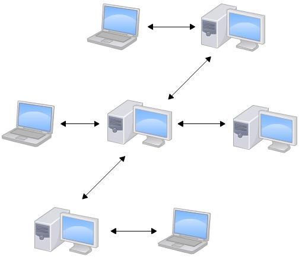
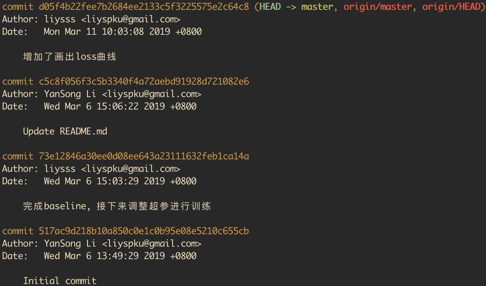
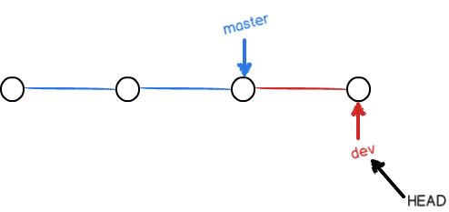

本文是自己在学习git中的一些命令的笔记，以及基本的一个开发流程。因为当你不经常使用一个东西的时候，就会忘记那些命令怎么去用，所以我将其记录下来。 本文内容，学习自廖雪峰老师的网站：https://www.liaoxuefeng.com
1. Git简介
集中式版本控制系统：版本库是集中存放在中央服务器的，干活的时候，要先从中央服务器取得最新的版本，然后开始干活，干完活了，再把自己的活推送给中央服务器。中央服务器就好比是一个图书馆，你要改一本书，必须先从图书馆借出来，然后回到家自己改，改完了，再放回图书馆。

缺点：因为网速的限制，每次存取的耗时可能较长，遇到网速慢的话，可能提交一个10M的文件就需要5分钟，在现在这个时代里，你能忍受么？
分布式版本控制系统：没有”中央服务器”，每个人的电脑上都是一个完整的版本库。所以工作的时候就不需要联网了，那如何多个人合作呢？我们只需要把各自的修改推送就可以了。和集中式版本控制系统相比较，分布式版本控制系统更安全，因为每个人都有完整的库，不用害怕服务器崩掉。

1.1. 创建版本库
首先，我们需要新建一个文件夹，把这个文件夹当做我们的仓库(repository)
1 | mkdir repository |
然后，使用 git init 来进行初始化设置，会生成一个 .git 的文件夹，里面存放的都是git仓库的管理信息。
再把文件添加到版本库，注意：千万不要使用Windows自带的记事本编辑任何文本文件。原因是Microsoft开发记事本的团队使用了一个非常弱智的行为来保存UTF-8编码的文件，他们自作聪明地在每个文件开头添加了0xefbbbf（十六进制）的字符，你会遇到很多不可思议的问题，比如，网页第一行可能会显示一个“?”，明明正确的程序一编译就报语法错误，等等，都是由记事本的弱智行为带来的。建议你下载Notepad++代替记事本，不但功能强大，而且免费！记得把Notepad++的默认编码设置为UTF-8 without BOM即可。
最后，我们使用命令来将我们改变的文件添加到Git仓库中去
1 | git add readme.txt |
2. 版本管理
2.1. 版本回退
当我们不断的进行add和commit操作之后，一旦我们发现某一天我们进行了一个错误的操作，需要我们回退到之前的版本：git log 命令显示从最近到最远的提交日志。如果嫌输出信息太多，看得眼花缭乱的，可以试试加上--pretty=oneline参数：git log --pretty=oneline。
我们看到了一大串数字开头，表示的是版本号，和SVN使用递增数字不一样，git使用的是一个SHA1计算出来的非常大的十六进制数字。

在git中，HEAD表示当前版本，上一个版本就是HEAD^，上上一个版本就是HEAD^^，当然往上100个版本写100个^比较容易数不过来，所以写成HEAD~100。
1 | git reset --hard HEAD^ |
这里需要注意下reset命令的参数有三个：
- hard：改变HEAD，索引和工作目录中的内容都恢复到指定版本。相当于我们做的一切修改都被删除了
- soft：改变HEAD，索引和工作目录中的内容不变，相当于回到了没有commit的状态
- mixed：改变HEAD，索引内容改变，工作目录中的内容不变，相当于回到了没有add的状态
在Git中只要知道了每一次操作的版本号就可以reset，那么如何从旧版本恢复到新版本呢？Git提供了一个命令git reflog用来记录你的每一次命令。
2.2 工作区和暂存区
工作区就是我们在电脑中的目录
工作区有一个隐藏目录.git，这个就是Git的版本库。Git的版本库里存了很多东西，其中最重要的就是称为stage（或者叫index）的暂存区，还有Git为我们自动创建的第一个分支master，以及指向master的一个指针叫HEAD。 
前面讲了我们把文件往Git版本库里添加的时候，是分两步执行的： 第一步是用git add把文件添加进去，实际上就是把文件修改添加到暂存区； 第二步是用git commit提交更改，实际上就是把暂存区的所有内容提交到当前分支。
2.3. 撤销修改
2.3.1. 丢弃工作区的修改
1 | git checkout -- readme.txt |
把readme.txt文件在工作区的修改全部撤销，这里有两种情况：
一种是readme.txt自修改后还没有被放到暂存区（未执行git add），现在，撤销修改就回到和版本库一模一样的状态；
一种是readme.txt已经添加到暂存区后，又作了修改（执行过git add），现在，撤销修改就回到添加到暂存区后的状态。
2.3.2. 丢弃暂存区的修改
如果我们执行了git add后，发现了文件的错误，这个时候该如何撤销呢？
1 | git reset HEAD readme.txt |
使用这个命令可以把暂存区的修改撤销掉（unstage），重新放回工作区。 还记得如何丢弃工作区的修改吗？
1 | git checkout -- readme.txt |
2.3.3. 丢弃版本库的修改
现在，假设你不但改错了东西，还从暂存区提交到了版本库，怎么办呢？还记得版本回退一节吗？可以回退到上一个版本。不过，这是有条件的，就是你还没有把自己的本地版本库推送到远程。
2.4 删除文件
当我们从工作区中删除一个文件的时候，我们有两个选择
2.4.1. 从版本库中删除该文件
1 | git rm test.txt |
2.4.2. 删错了文件
因为版本库里还有呢，所以可以很轻松地把误删的文件恢复到最新版本：
1 | git checkout -- test.txt |
3. 远程仓库
3.1. 添加远程库
使用Github来作为Git的远程仓库
那么如何把本地仓库与远程仓库关联呢？
1 | git remote add origin git@github.com:liysss/Self-NN.git |
下一步，就可以把本地库的所有内容推送到远程库上：
1 | git push origin |
3.2. 从远程库克隆
1 | git clone git@github.com:liysss/Self-NN.git |
4. 分支管理
4.1 创建分支
一开始的时候，master分支是一条线，Git用master指向最新的提交，再用HEAD指向master，就能确定当前分支，以及当前分支的提交点，每次提交，master分支都会向前移动一步，这样，随着你不断提交，master分支的线也越来越长。

当我们创建新的分支，比如dev的时候，Git新建了一个指针叫dev，指向master相同的提交，再把head指向dev，就表示当前分支在dev上。 
Git新建一个分支很快，因为除了增加一个dev指针，改改HEAD的指向，工作区的文件都没有任何变化。不过，从现在开始，对工作区的修改和提交就是针对dev分支了，比如新提交一次后，dev指针往前移动一步，而master指针不变。 
1 | $ git checkout -b dev |
现在，我们在dev分支上面的工作完成了，我们就可以切换回master分支
1 | $ git checkout master |
然后，把dev分支上的工作成果合并到master分支上
1 | $ git merge dev |
合并完成后，就可以放心地删除dev分支了
1 | $ git branch -d dev |
4.2. 解决冲突
当Git无法自动合并分支时，就必须首先解决冲突。解决冲突后，再提交，合并完成。
解决冲突就是把Git合并失败的文件手动编辑为我们希望的内容，再提交。
4.3. 分支管理
合并分支时，加上--no-ff参数就可以用普通模式合并，合并后的历史有分支，能看出来曾经做过合并，而fast forward合并就看不出来曾经做过合并。
4.4. Bug分支
当你接到一个修复一个代号101的bug的任务时，很自然地，你想创建一个分支issue-101来修复它，但是，等等，当前正在dev上进行的工作还没有提交。
幸好，Git还提供了一个stash功能，可以把当前工作现场“储藏”起来，等以后恢复现场后继续工作。
1 | $ git stash |
1 | $ git checkout -b issue-101 |
修复完成后，切换到master分支，并完成合并，最后删除issue-101分支：
1 | $ git checkout master |
然后切回dev分支干活吧
1 | $ git checkout dev |
1 | $ git stash list |
1 | $ git stash pop |
4.5. Feature分支
软件开发中，总有无穷无尽的新的功能要不断添加进来。
添加一个新功能时，你肯定不希望因为一些实验性质的代码，把主分支搞乱了，所以，每添加一个新功能，最好新建一个feature分支，在上面开发，完成后，合并，最后，删除该feature分支。
1 | $ git checkout -b feature-vulcan |
切回dev，准备合并
1 | $ git checkout dev |
如果要丢弃一个没有被合并过的分支，可以通过git branch -D <name>强行删除。
4.6. 多人协作
要查看远程库的信息，用git remote，或者，用git remote -v显示更详细的信息。
4.6.1 推送分支
推送分支，就是把该分支上的所有本地提交推送到远程库。推送时，要指定本地分支，这样，Git就会把该分支推送到远程库对应的远程分支上：
1 | $ git push origin master |
如果要推送其他分支，比如dev，就改成：
1 | $ git push origin dev |
但是，并不是一定要把本地分支往远程推送，那么，哪些分支需要推送，哪些不需要呢？
master分支是主分支，因此要时刻与远程同步；dev分支是开发分支，团队所有成员都需要在上面工作，所以也需要与远程同步；- bug分支只用于在本地修复bug，就没必要推到远程了，除非老板要看看你每周到底修复了几个bug；
- feature分支是否推到远程，取决于你是否和你的小伙伴合作在上面开发。
4.6.2 抓取分支
多人协作时，大家都会往master和dev分支上推送各自的修改。
首先，可以试图用
git push origin <branch-name>推送自己的修改；如果推送失败，则因为远程分支比你的本地更新，需要先用
git pull试图合并；如果合并有冲突，则解决冲突，并在本地提交；
没有冲突或者解决掉冲突后，再用
git push origin <branch-name>推送就能成功！
4.7. Rebase
在上一节我们看到了，多人在同一个分支上协作时，很容易出现冲突。即使没有冲突，后push的童鞋不得不先pull，在本地合并，然后才能push成功。
每次合并再push后，分支变成了这样：
1 | $ git log --graph --pretty=oneline --abbrev-commit |